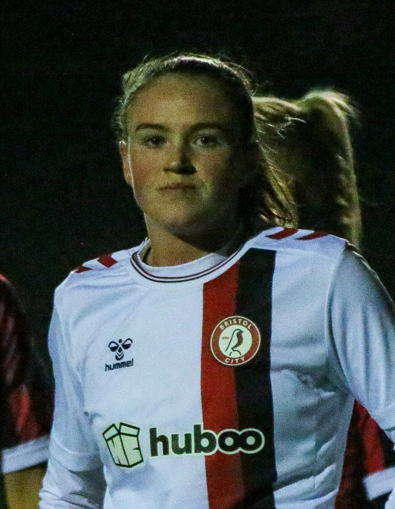

藤野青叶梅开二度导演逆转！曼城客场4-1大胜国米斩获欧冠首胜
安德烈·耶格勒茨在多名主力轮休的情况下客场破局，逆转击溃此前意甲零封的国米女足。

赛况速递
周二晚间，曼城女足终于迎来了本赛季女足欧冠的首场胜利。在蒙扎的布里安特奥球场（Stadio Brianteo），蓝月军团在先失一球的不利局面下奋起反击，最终以4-1客场大胜国际米兰女足。
主场作战的意甲劲旅率先发难，埃莉萨·巴尔托利（Elisa Bartoli）接伊万娜·安德烈斯（Ivana Andrés）的传中头槌破门。要知道，国米在本场比赛前保持着本赛季意甲前六轮零失球的傲人纪录。然而，曼城在上半场便给出了强势回应。日本国脚前锋藤野青叶反越位接劳拉·布林德基尔德·布朗（Laura Blindkilde Brown）的直塞推射扳平；半场结束前的第44分钟，玛丽·福勒（Mary Fowler）的攻门被对方门将扑出，藤野青叶机敏补射得手，帮助曼城反超比分。

易边再战，曼城牢牢掌控了场上局势。萨姆·科菲（Sam Coffey）送出妙传，克斯汀·卡斯帕赖（Kerstin Casparij）低射入死角将比分扩大为3-1。随后替补登场的劳伦·亨普（Lauren Hemp）送出精准传中，格蕾丝·克林顿（Grace Clinton）在极小角度凌空扫射破门锁定胜局。防守端，门将山下杏也加发挥稳健，先后化解了海莉·布杰加（Haley Bugeja）和米凯拉·坎比亚吉（Michela Cambiaghi）的威胁攻门，力保胜利果实。
焦点解析
这场大胜彻底盘活了曼城的欧战出线形势。此前连续战平拜仁慕尼黑、皇家马德里和巴黎圣日耳曼遭遇三连平后，球队极度渴望一场胜利来提振士气。
更令人刮目相看的是，主帅安德烈·耶格勒茨（Andrée Jeglertz）是在对首发阵容进行了大幅轮换的前提下交出这份答卷的——毕竟周末还有一场至关重要的联赛硬仗。头号得分手哈迪贾·肖（Khadija Shaw）整场比赛坐在替补席上待命，劳伦·亨普和长谷川唯等核心也均未首发。面对国内防线固若金汤的国米，曼城用一场酣畅淋漓的逆转展现出了惊人的阵容厚度。

核心数据
- 4：曼城本场打入4球，而国际米兰女足此前在意甲前六轮保持零失球。
- 6：凭借这场首胜，曼城在女足欧冠积分榜上的积分直接翻倍，来到6分。
- 2：22岁的日本新星藤野青叶独中两元，成为上半场逆转局面的头号功臣。
- 0：队内头号射手哈迪贾·肖本场出场时间为0分钟，在周末大战前得到了充分的休整。
下一步动向
曼城将在本周六奔赴伦敦，在斯坦福桥球场与英女超争冠死敌切尔西展开直接对话。而在欧战赛场，这场大捷也让蓝月军团在小组赛收官阶段重新掌握了出线主动权。